Wyjątkowa Okazja!
Ford Explorer 2020 - Luksusowy SUV, 6-Miejscowy, Doskonałe Wyposażenie, Tylko 31,600 km!
Sprzedam elegancki i wszechstronny SUV rodzinny w idealnym stanie, z bogatym wyposażeniem i niskim przebiegiem!
Szczegóły Pojazdu:
Marka i Model: Ford Explorer
Rok Produkcji: 2020
Pierwsza Rejestracja w Kraju: 04.05.2022
Pojemność Silnika: 2,3 litra (BENZYNA)
Moc: 303 KM
Skrzynia Biegów: Automatyczna, 10-stopniowa
Przebieg: Tylko 31,600 km
Kolor: Stylowy oliwkowy
Komfort i Technologia:
Automatyczna Klimatyzacja: Zarówno z przodu, jak i z tyłu
Podgrzewane Siedzenia i Kierownica: Idealne na chłodniejsze dni
Wybór Trybów Jazdy: Eco, ślizga nawierzchnia, sport i więcej
Otwieranie Drzwi za Pomocą Kodu: Nowoczesne i wygodne rozwiązanie
Nawigacja z Aktualną Mapą Europy: Niezawodna i zawsze aktualna
Bezpieczeństwo:
Stan Techniczny: W pełni sprawny i gotowy do jazdy
Ważna Polisa OC
Aktualne Badania Techniczne
Stan Pojazdu:
Techniczny i Wizualny: Bardzo dobry
Komfort: Bezpieczny i wygodny dla całej rodziny
Dlaczego warto?
Jeden Właściciel w Kraju
Niski Przebieg
Doskonałe Wyposażenie
Regularnie Serwisowany i Utrzymany w Idealnym Stanie
Kontakt:
Zachęcam do kontaktu i oględzin samochodu na żywo. To wyjątkowa okazja, której nie można przegapić!
Mozliwość sprzedaży przez komis.
 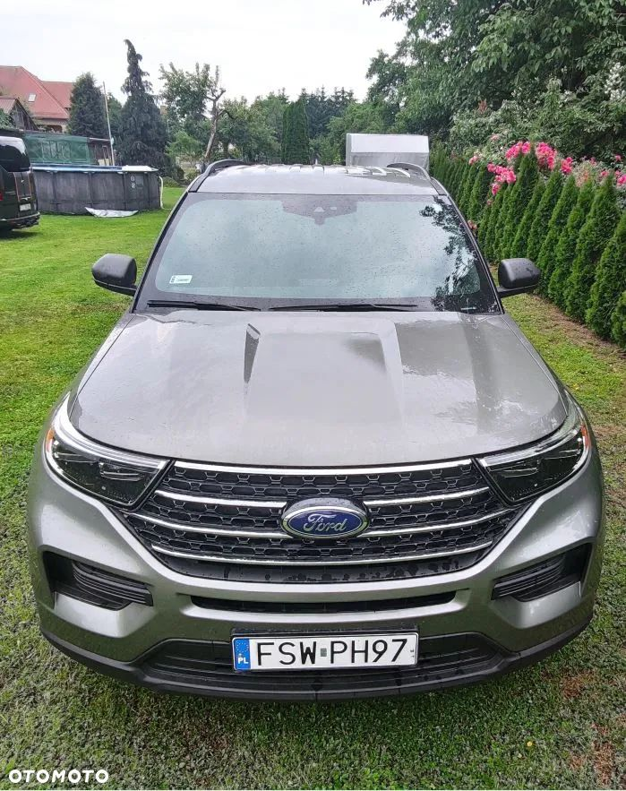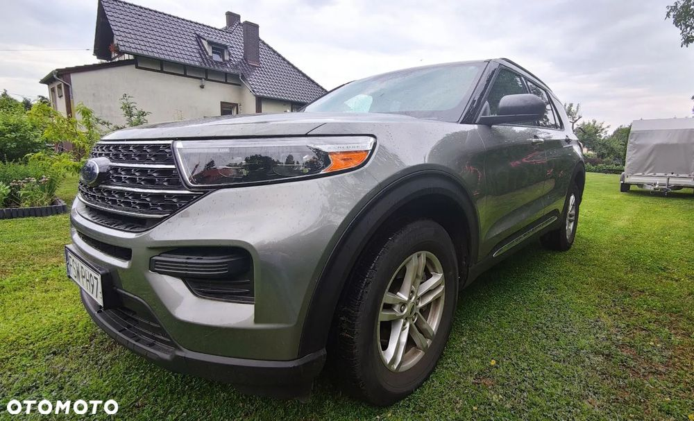
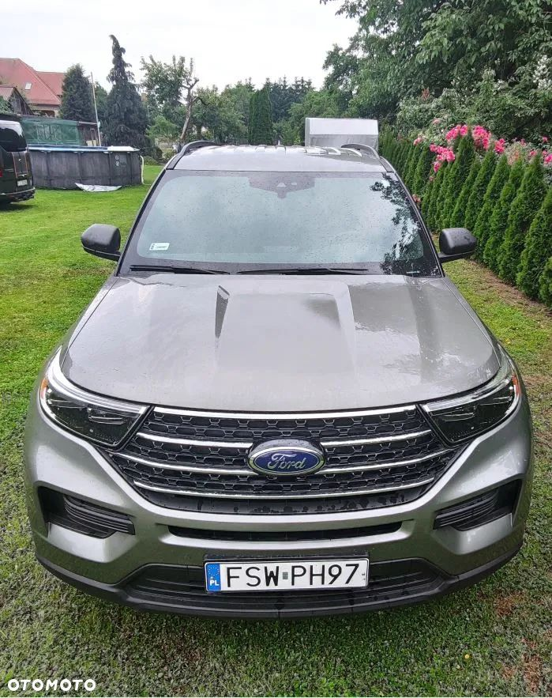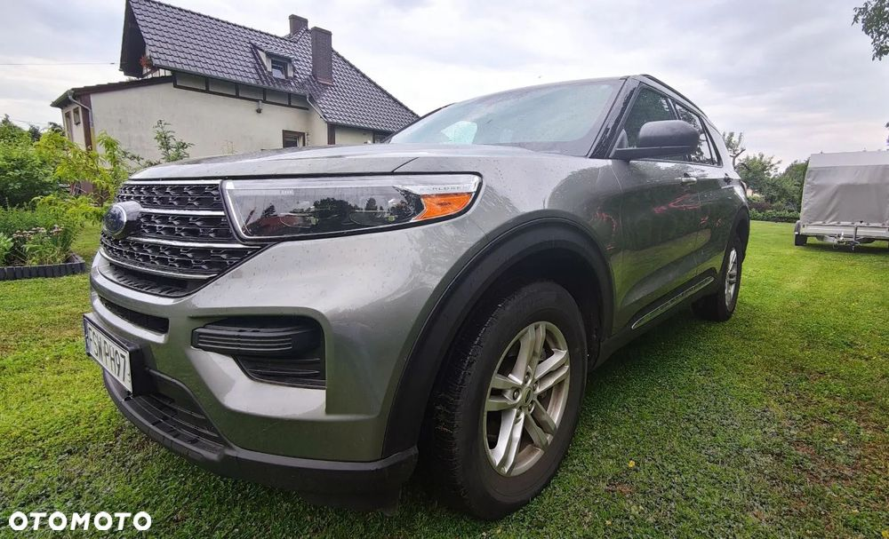

 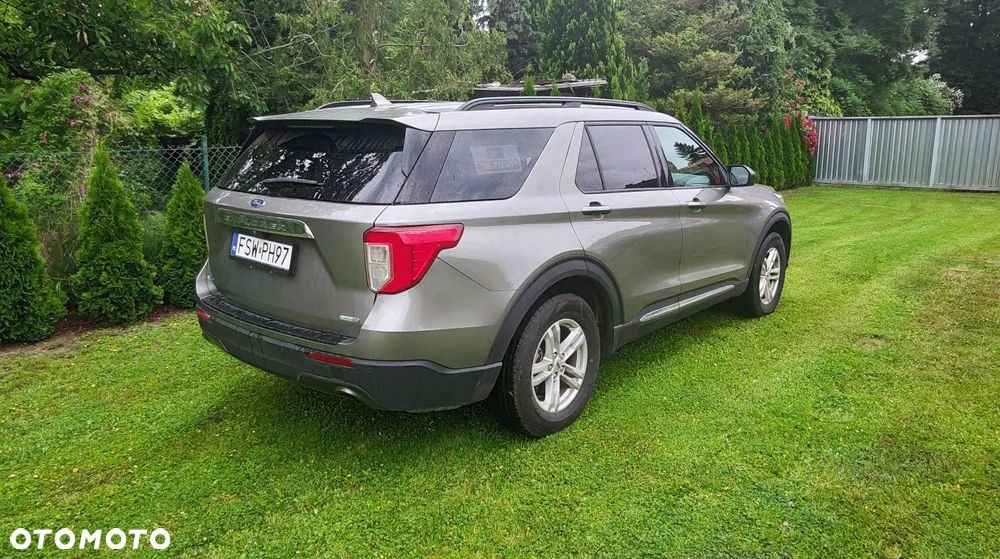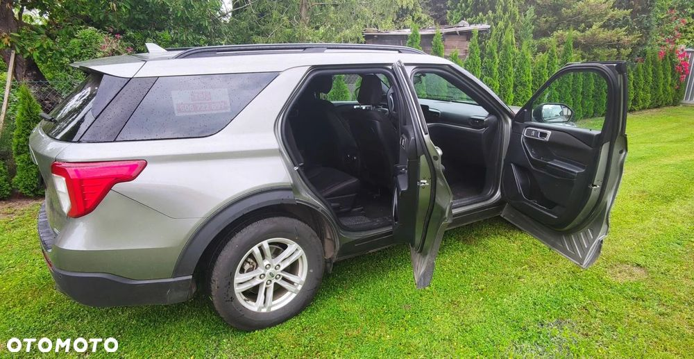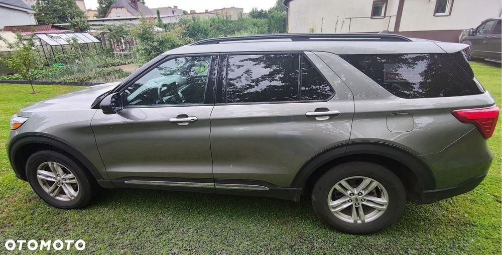
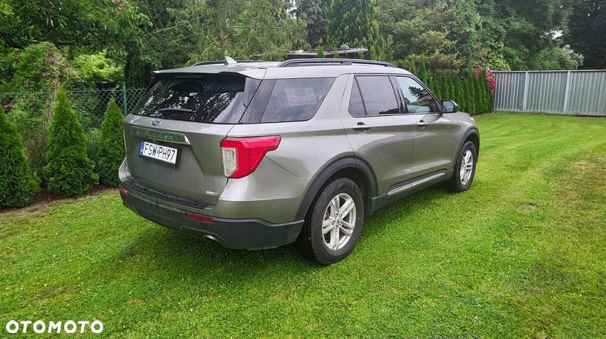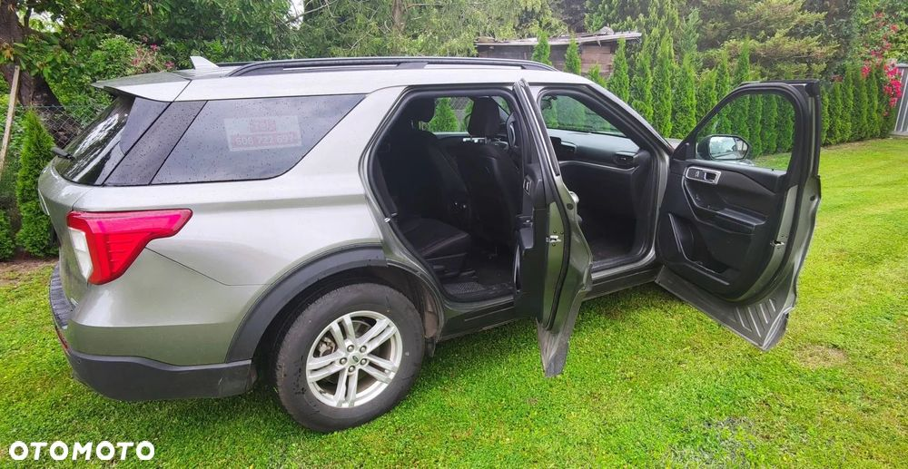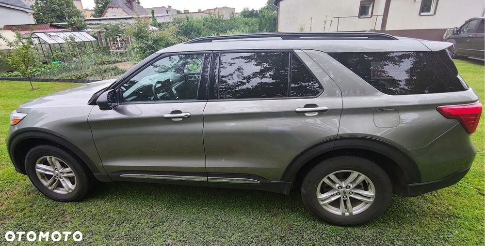

 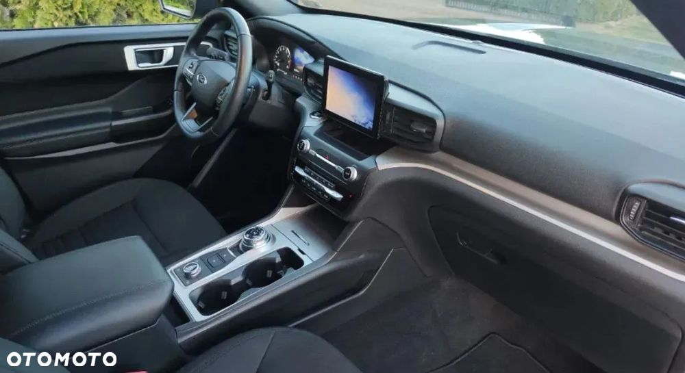
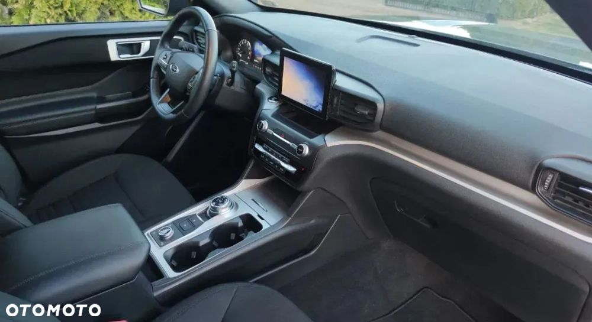